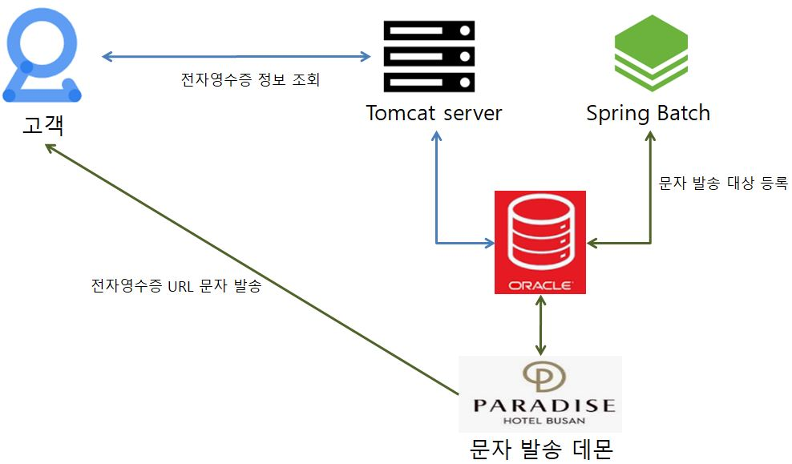

파라다이스 호텔에서 발급하는 전자영수증을 개발하는 프로젝트입니다. 개발단계는 사내에서 진행하였고 배포 및 테스트 단계는 VPN 접속을 통해 진행하였습니다.
Cent OS WEB/WAS 서버(Tomcat 7) 1대, 운영 데이터베이스(Oracle), 문자발송데몬 서버로 구성되어 있으며, 배포는 VPN망을 통해 SFTP로 서버에 WAR 파일을 업데이트한 뒤 Tomcat을 재기동 하였습니다. 
파라다이스 호텔 전자영수증
파라다이스 호텔에서 발급하는 전자영수증을 개발하는 프로젝트입니다.
참여인원 및 업무개발단계는 사내에서 진행하였고 배포 및 테스트 단계는 VPN 접속을 통해 진행하였습니다.
- 팀장 - 업무 협의 및 기획
- 웹개발자 1명 - 시스템 개발
- 퍼블리셔 1명 - 웹 퍼블리싱(HTML, CSS, IMAGE)
My 상세 업무